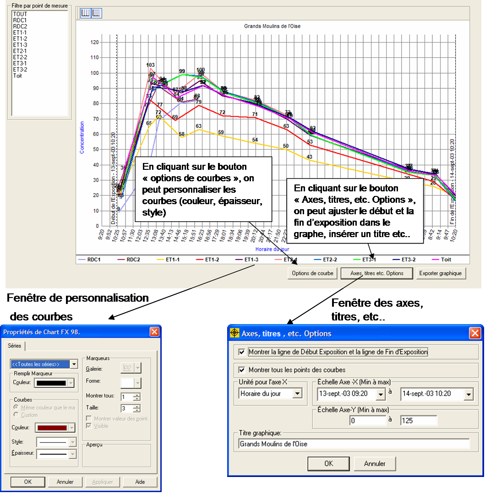
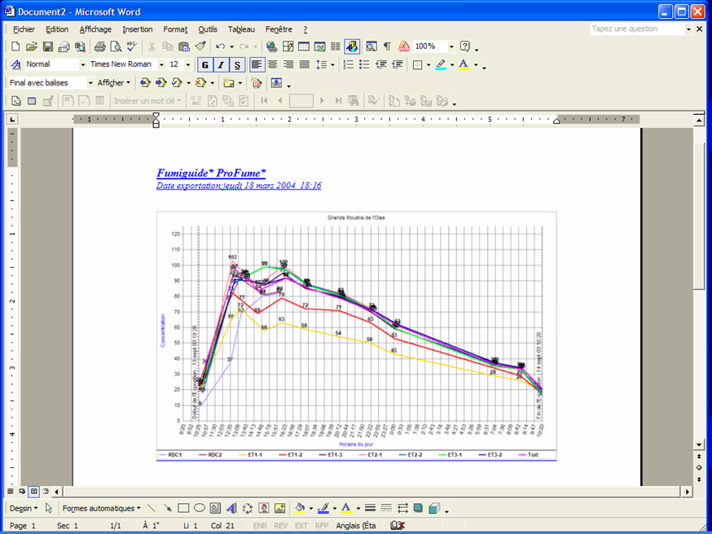

Onglet
Graphique
L'onglet Graphique permet aux
utilisateurs de créer un graphique de concentration ProFume (axe vertical) par
le Temps d'exposition (axe horizontal). L'utilisateur définit les valeurs Début
et Fin Exposition, Horaire ou Temps écoulé. D'autres modifications du graphique
incluent l'aspect des Points de mesure par Couleur, Type, Taille des lignes et
Marqueurs de point.
Par défaut, Fumiguide transpose toutes les mesures de
concentrations dans le graphique. Les données dans la grille Graphique peuvent
être filtrées pour sélectionner tout point de mesure.
Le graphique trace
la Concentration (axe y) par rapport au temps (axe x). Par défaut, l'axe y
présente une plage de 0 jusqu'à la concentration initiale maximale parmi les
zones dans un chantier particulier. Par défaut, l'axe x présente une plage de
Début Injection jusqu'à Fin Exposition.
Note : Changer les horaires Début
Exposition ou Fin Exposition dans l'onglet Graphique n'affecte aucun des calculs Fumiguide dans d'autres onglets. Pour changer le Durée d'exposition dans des calculs de dosage, l'utilisateur doit changer les valeurs Début exposition ou Fin Exposition dans l'onglet Saisie des concentrations ou Suivi dosage.

Les utilisateurs peuvent changer
la plage des axes x et y. Les utilisateurs peuvent aussi définir les unités de
l'axe x à Horaire réel (8:35) ou Temps écoulé (16 heures). Les utilisateurs
peuvent aussi afficher ou masquer les lignes verticales pointillées indiquant
les horaires Début Exposition et Fin Exposition.
Les propriétés du
graphique définies par l'utilisateur seront enregistrées dans la base de
données. Ces propriétés sont le titre, la couleur de fond du graphique, les
unités de l'axe x (temps ou temps écoulé), indicateurs de ligne, échelles de
l'axe x et de l'axe y.
En cliquant sur le bouton Exporter
graphique , le Fumiguide ProFume exportera le graphique sur un nouveau document MS Word. Des informations supplémentaires relatives au graphique exporté peuvent être tapées sur la même page que le graphique si besoin. Une fois ces notes saisies, le document MS Word peut être sauvegardé sur un répertoire de l’ordinateur.

*Trademark of Dow AgroSciences LLC